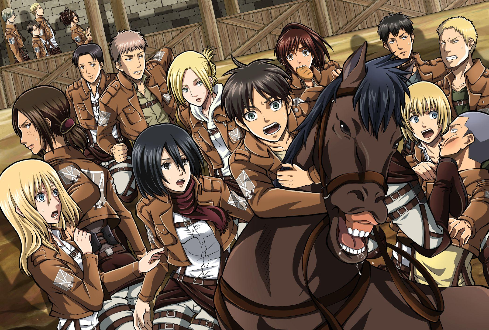

Your beginner-friendly guide to the world of anime
Just find what sounds like you and start there!
Try My Hero Academia — a high energy show about a boy with no powers trying to become the world's greatest hero.
Try Your Lie in April — a beautiful story about music, love, and growing up that will have you in tears by the end.
Try Attack on Titan — humanity is on the edge of extinction and every episode will leave you wanting more.
Try Ouran High School Host Club — a lighthearted and funny show that is great for casual viewing.
Try Demon Slayer — a stunning anime about a boy on a mission to save his sister, with some of the most beautiful animation ever made.
